- A capacitor
The impedance of capacitor can be expressed as
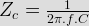.
Hence, impedance of capacitor is inversely proportional to the supply frequency(f). In ac frequency has non - zero finite value, so impedance will have finite value but in DC f = 0, so impedance will have infinitely large value. Thus a capacitor blocks DC but passes AC. - A 100 μF capacitor supplied from 3 V source with a frequency of 50 Hz. The capacitive reactance is
The capacitive reactance can be expressed as

- A capacitor passes a electric current of 12.6 mA when supplied with 20 V ac with a frequency of 1000 Hz. The capacitance will be
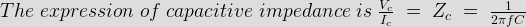
Where, Vc is the voltage across capacitor, Ic electric current through the capacitor, f & C are frequency and capacitance.
Here, Vc = 20 V, Ic = 12.6 mA and f = 1000 Hz.
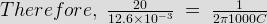

- A 10 μF capacitor and 100 W, 220 V lamp is connected in series across a 220 V alternating supply. In which frequency of the supply the lamp will glow brightest?
The impedance of capacitor is inversely proportional to its supply frequency. The impedance offered by the capacitor to the circuit is less when supply frequency is more. If impedance is less, electric current flows through the circuit (i.e. lamp) is more which results to glow the lamp brighter.
- A 20 μF capacitor and 200 W, 220 V lamp is connected in series across a 220 V alternating supply. In which frequency of the supply the lamp will glow dimmest?
The impedance of capacitor is inversely proportional to its supply frequency. The impedance offered by the capacitor to the circuit is more when supply frequency is less. If impedance is more, electric current flows through the circuit (i.e. lamp) is less which results to glow the lamp dimmer.
- The capacitive reactance of a capacitor of 1 / 2π F at 103 Hz is
The capacitive reactance can be expressed as
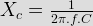 - When ac flows through a pure capacitance then the current
When ac flows through an capacitance, the electric current leads the emf by 90°.
- It a capacitors of capacitance 100 μF is connected across a voltage source of 10 V, then what will be the energy stored in that capacitor
It a capacitor of capacitance value C have voltage difference V between its parallel plates then the energy stored in the capacitor is expressed as
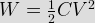 - A capacitor carries a charge of 0.3 C at 20 V. Its capacitance is
The capacitance of a capacitor is expressed as
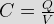
Where C is the capacitance, Q is charge and V is the voltage. - A parallel plate capacitor has a capacitance of C farad. It area of the plates is doubled and the distance between them is half, the capacitance of the capacitor is
A capacitor consists of two parallel places separated by a dielectric material. It the area of the plates is A m2 and the distance between them is d meter, the capacitance C is given by
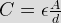
Where A is the area of the plates and d is distance between the plates. From the above expression of capacitance it is obvious that, if area is doubled and distance is half the capacitance will become 4 times. - Which of the followings is the expression for energy stored in a capacitor
The instantaneous power in the capacitor is given by p = iv
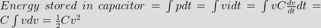 - A capacitor is connected to supply with switch and the switch is connected between capacitor and supply. Initially switch is open at time zero, and then switch is closed. Then how capacitor behaves at time t = 0+ ?
- C eq of two capacitors connected in series is given by
SERIES combination of capacitors is same as PARALLEL of resistance.
- A capacitor has a capacitance of 6 μF. Calculate the stored energy in it if a dc voltage of 100 V, is applied across it
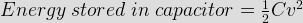
- A capacitor that stores charge of 0.5 C at 10 V has a capacitance of _____________ farad.
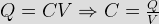
- A p.d. of 300 V is applied across series combination of 3 μF and 9 μF capacitors. The charge on each capacitor is ___________________ μC.
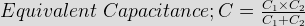
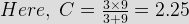
- A 50 μF capacitor is charged to retain 10 MJ of energy by a constant charging electric current of 1 A. Determine the voltages across the capacitor?
- The capacitance of a conductor is varying from 2 microfarad to zero in 1 sec linearly if the voltage applied to it is 6 V the energy stored in 0.5 sec in the condenser is
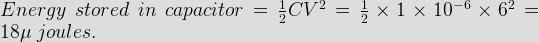
Here C is taken as μ F only since capacitor varies linearly. - What will be the capacitance when distance between the 2 plates of a condenser of capacitance 8 micro farad is reduced from 10 mm to 4 mm?
Where, A is common area of conductor plates.
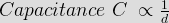
Where, d is the distance between two conductor plates. - Purpose of using capacitor is/are
Purposes of using capacitors are
1) increasing p.f. of inductive load circuit
2) to do phase split in ac 1 phase motor
3) effect dc filter in electronic circuit
4) also helps in tuning in radio and TV sets.
Design with  by SARU TECH
by SARU TECH
www.sarutech.com
Content Credited to electrical4u.com
Online Electrical Engineering Study Site